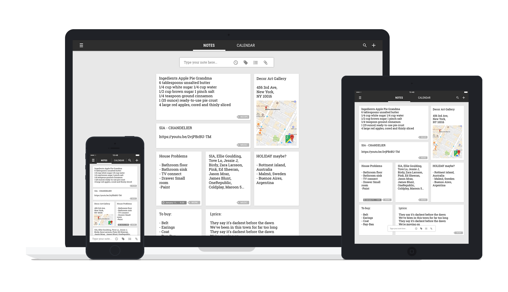
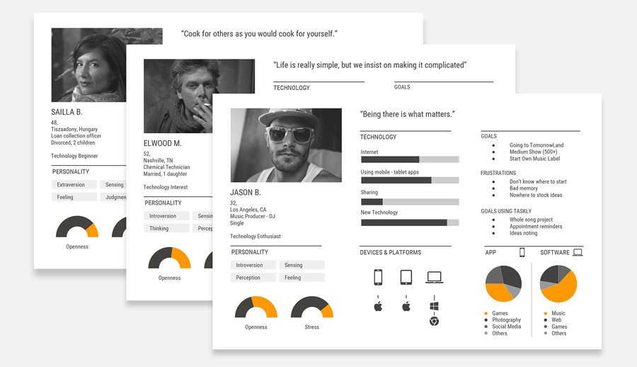
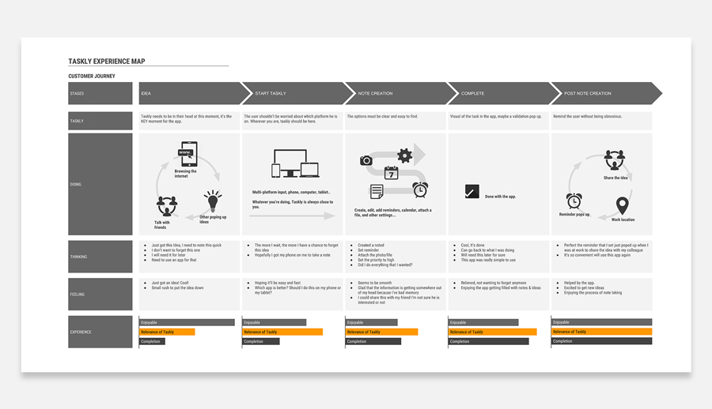
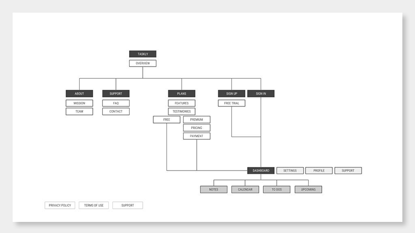
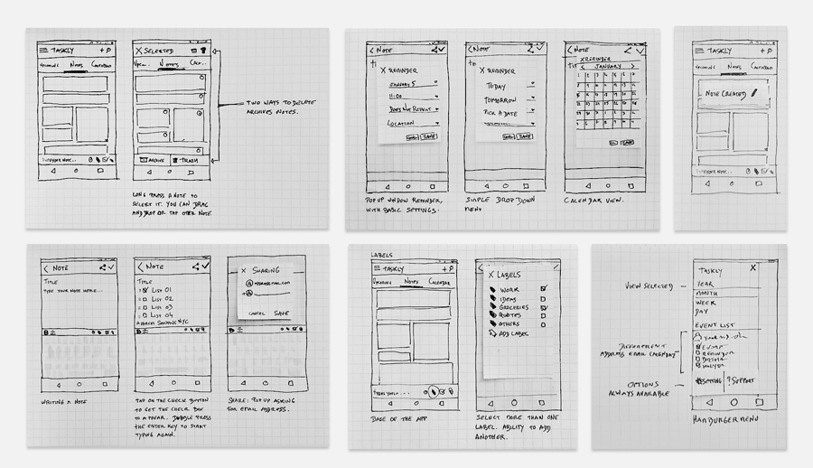
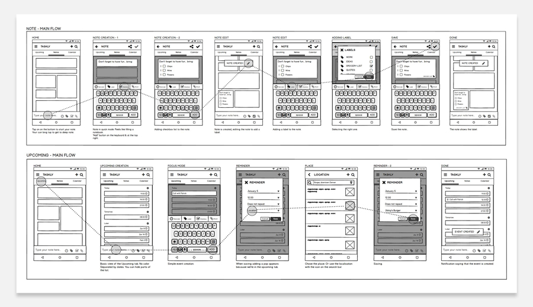
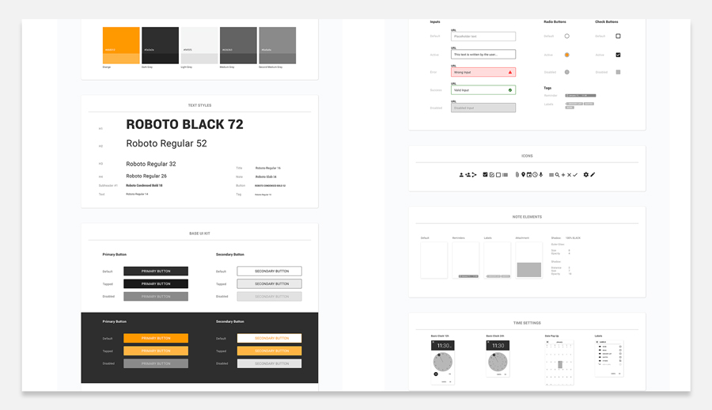
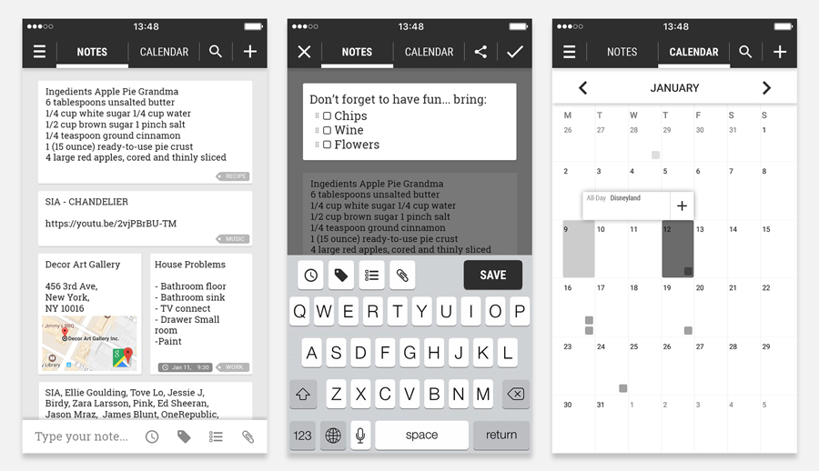
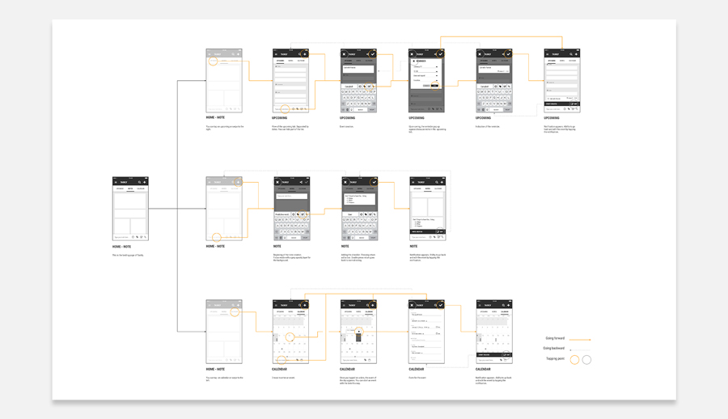

Created for the UX design course at CareerFoundry, Taskly is a note taking app made for the everyday user. Its goal is to keep your ideas, events, and everything that you want to remember close to you. All of this, while delivering a simple and easy to use interface.
Creating a product from scratch, with a limited amount of time, is something on its own. Every decision matters. I knew from the beginning that there is a hugely competitive market for similar apps. For taskly to be even considered among these apps, it needed to be something more.
I was the only designer responsible for this project, I personally created both the user experience and the user interface.
The very first step of this project was to define who are the competitors, it played an essential part of what taskly has become. Allowing me to discover what makes the competitors unique, what are their strengths and weaknesses. I found that there was no calendar option in competitor's product and decided to use this gap for taskly.
I began to seek out for qualitative data that could support the information I already had. Getting insight from potential users was the key to determining the MVP of taskly. Identifying what the potential customer already uses. These tests were conducted with actual competitor’s consumers and new users that have never interacted with any task management app.
Qualitative data collection by user interviews was essential for this project, it was conducted at nearly every stage.
I began to search the potential users for Taskly. Finding their demographics, behaviors, needs and motivations helped during the creation of the product. Seeing how it gave me empathy throughout the creation of the app by having a face on a potential user. I never truly understood the full potential of personas until later on in the development of the app.
Finding the MVP of the product was necessary to move on to the next stage. I laid out every possible feature and selected only the one that would be essential to the launch of the product. I needed to find which product should be built, what problems needed to be solved, and therefore minimized the risk when launching the app.
The MVP is a pillar point in a lean UX and agile process.
Customer chooses products based on the quality of the experience they have with them. Being able to visualize a user's journey is essential in determining how to make the flow better. Beginning with an end goal in mind, I planned the phases the user would go through. The map is meant to be a catalyst, pushing the design to each phase by highlighting the journey and helping identify the opportunities and pain points.
The more intuitive the navigation, the more the user can avoid frustration. Starting with a system based on a flat architecture, I listed each page of the website. However due to time constraint, the site full, wasn't built, only the dashboard portion of the product was created.
Starting with pen and paper is the best way to jot down as many ideas of design as possible. It keeps you from getting caught up in the technology. Using this technique, it allowed me to take a faster approach to rapid iteration before starting digital. With feedback along the way, I was able to start defining a design. Then taking it in front of potential users to observe their reaction.
It’s about getting as many ideas down as possible without being afraid of making a wrong choice.
Once the sketches had a strong design direction, I focused on creating wireframes for the two main features of the product. It helped to narrow down the design to few variations. Ignoring the visual style of the finished product I could pay attention to the placement of the element while still communicating enough information to test the design with potential users.
It’s a technical plan (like a blueprint for the “architect”), it’s not meant to be pretty.
Developing the user interface was a significant step in removing the uncertainty for the user. It makes the product feels finished. As UI goes, it changes the user experience too. I created the interface with a very simple and minimal color palette in order take away any possible confusion with the user.
About 15% of the world’s population live with some sort of disability. Device compatibility and accessibility is a deciding factor when choosing an app. I tested the app with color blindness tools and made sure that the values (aside from the color) were different to ensure the accessibility of the app.
Once the design was found, the prototype was made within photoshop. I started with low fidelity mockups who would then be converted into prototypes with limited functionalities. Using prototypes were great for user testing because they didn’t have the ambiguity of the low fidelity sketches.
With the design matured, pushing the test to more users was crucial to find how the customer would interact with the product. Users were asked to complete specific tasks. I checked to see if they encounter problems or experience confusion. These tests were the base of many changes, such as the menu bar.
The key performance indicators changed as the app evolved. Upon initial tests, it was about usability metrics, like who uses the upcoming tab and the calendar. It helped me understand what users would really do inside the app. This data associated with the CTA performance were critical when taking a decision to change the design.
I tracked the clicks of each button. It helped measure how the design was performing. If the major call-to-action were respected or not. If it wasn’t I would then change the color/contrast/placement/size to make sure that the CTA got the desired impact.
Performing multiple A/B tests to determine whether control or variable design is more effective. Combined with the CTA performance and the KPI it was the main quantitative data to backup the changes made inside the app.
While being constantly pushed to my limit during the development of the product, it was an amazing experience. A lot of things went right, but as any project, things also went wrong. Reflecting on these mistakes is a great way to learn and apply those learning for the next projects to come.
I learned that you can’t please every user that you encounter. During the development of taskly I set some wrong expectation from a category of users that I thought could be potential customers until I discover that they weren’t interested in any new application in the first place.
I also found that feedback (data analytics) is the key to a good user experience. Seeing how big of an impact it had on the project, I could have made it easier on myself by gathering more user information in the beginning of the project. Good insight of the data that is being collected is at the heart of creating a good user experience.
Last but not the least, don’t dwell on your mistakes. Sometimes the hardest decision in a project is to kill a feature that looked ingenious from a design point of view but never truly translated to the user understanding the feature.